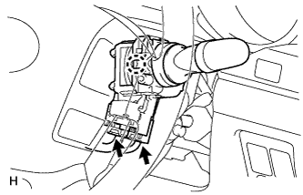

WIPER SWITCH > REMOVAL |
| 1. REMOVE LOWER STEERING COLUMN COVER |
| 2. REMOVE UPPER STEERING COLUMN COVER |
| 3. REMOVE WINDSHIELD WIPER SWITCH ASSEMBLY |
 |
Disconnect the 2 connectors.
Using a screwdriver wrapped with protective tape, disengage the claw and remove the wiper switch.